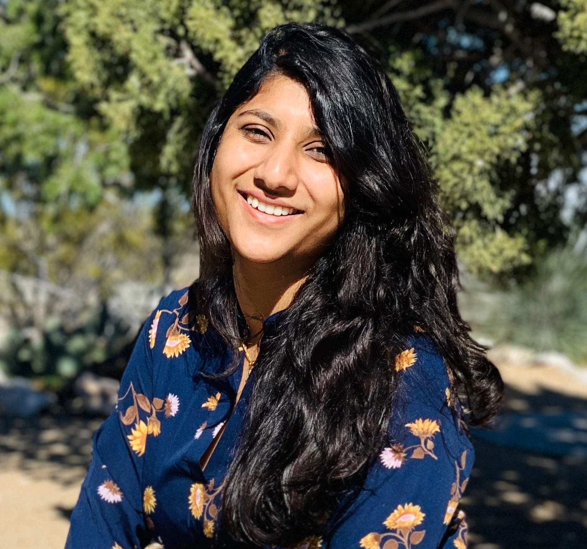

PhD in Psychology
I am a PhD student in Psychology at Arizona State University in the Talking Across Language and Context Lab (TALC), advised by Dr. Alexandra Carstensen and Learning and Development Lab (LDL), advised by Dr. Viridiana Benitez. I received my MS in Computer Science from Arizona State University where I worked with Dr. Troy McDaniel and Dr. Hemanth Kumar Venkateshwara and, my B.Tech in Computer Science with Honors in Cognitive Science from the International Institute of Information Technology (IIIT-H), Hyderabad, India where I worked on Dr. Kavita Vemuri.
My research focuses on understanding how culture shapes cognition, perception, and relational reasoning in children and adults in India and the United States. I am also interested in understanding how language influences cognition and perception across cultures.
Download CVArizona State University, Tempe
Arizona State University, Tempe
International Institute of Information Technology (IIIT-H), Hyderabad, India
Built infrastructure tools to conduct tests, deploy, and release the latest versions of Aurora MySQL Engine. Designed and developed an end-to-end Health Monitoring System for the team to manage resources used for MySQL Engine Release.
TA for CSE 598: Introduction to Deep Learning in Visual Computing (Dr. Hemanth D) and FSE 100: Introduction to Engineering. Designed quizzes, assignments, and exam questions. Built an auto grader for course assignments.
Analyzed and visualized ASU student data to understand email trends. Implemented a web crawler to get information on all ASU courses to understand student trends.
Automated data loading for all disconnected applications enrolled in Oracle Identity Manager (OIM), achieving a run time of 5 secs. Developed a website in Django to manage different OIM servers. Worked as a key member in conducting User Access Re-validation (UAR).
TA for Functional Analysis, Operating Systems, and Theater Arts. Designed assignments for 250 students and evaluated them weekly. Conducted tutorial sessions to help clarify questions for students.